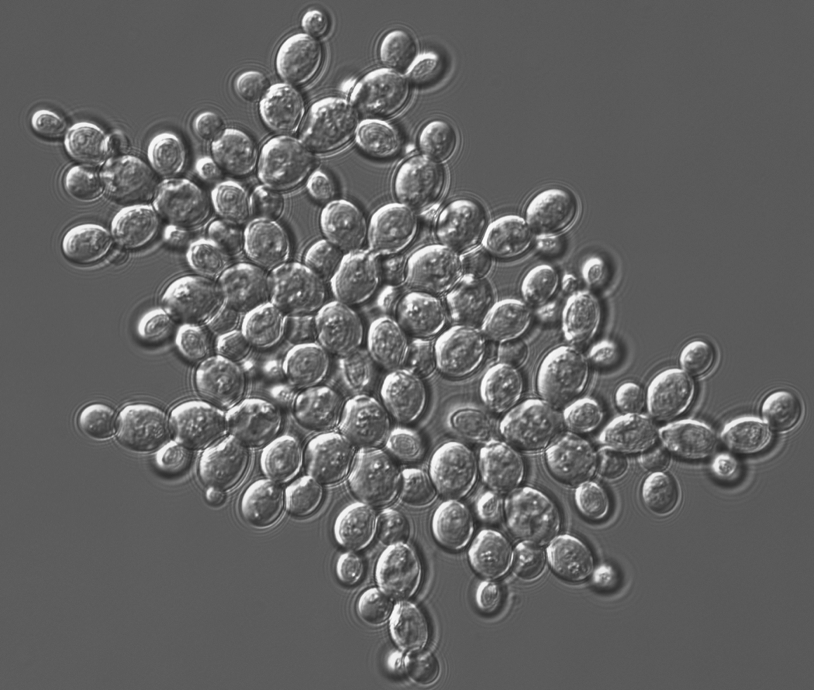

MuLTEE
The story of the experiment
2010 to 2014
Building the model system
Snowflake yeast were made in Michael Travisano's lab at the University of Minnesota, where Will Ratcliff was a postdoc. Out of a conversation about experiments that could address the major evolutionary transitions, the two designed a simple experiment around a new selection regime: let yeast cells settle through the liquid culture, transfer the bottom fraction into the next day's fresh tubes, and see whether yeast could evolve multicellular clusters. The design was remarkably effective. Ten replicate populations of unicellular Saccharomyces cerevisiae Y55 were grown in liquid and settled daily, and all ten evolved clonal snowflake clusters within just 60 transfers, about 300 generations. Clusters form because mother and daughter cells fail to separate after budding, so every cluster is clonal. Under settling selection the multicellular genotypes had a 34% fitness advantage; without settling selection they appeared to pay a cost of about 10% (P = 0.06).
Two results from this period were important for the work that followed. The first was genetic. RNA-seq identified 1,035 differentially expressed genes, and seven of the ten most strongly downregulated were targets of the transcription factor ACE2. Knockout and complementation confirmed that loss of ACE2 is both necessary and sufficient for the snowflake phenotype. Because a single gene deletion produces the multicellular phenotype, later experiments could begin from a constructed ace2Δ ancestor rather than waiting for the mutation to arise.
The second was methodological: settling selection screens enormous numbers of clusters for size every day, and its strength can be tuned by shortening the settling window. That made snowflake yeast a practical system for evolving increased multicellular size (how and why we select for size).

Ratcliff moved to Georgia Tech in 2014 and continued this work there. Over the next few years the lab studied how high rates of cell death promote the formation of multicellular aggregates, how aggregative and clonal multicellularity compete against one another, and the biophysics behind the first increases in cluster size. This work was done through short-term evolution experiments and modelling. There was no long-term evolution experiment, since size gains in the earlier work had been modest.
2018
Testing whether oxygen limits multicellular size
In these early experiments, the model system appeared to have an upper limit on size. Size increase flattened after a few hundred generations, and clusters remained microscopic. The interpretation available at the time was that snowflake yeast could evolve into multicellular clusters but could not evolve much beyond that, and that the system was therefore not well suited to studying open-ended multicellular evolution.
Ozan Bozdag joined the Ratcliff lab as a postdoc and proposed a new project exploring the relationship between multicellular size, oxygen concentration, and carbon metabolism, building on his doctoral work growing yeast under different metabolic regimes. In an organism that respires, oxygen reaches interior cells by diffusion, and diffusion limits how large a mass of respiring cells can become. If oxygen delivery was what constrained cluster size, then changing the growth conditions should remove the limit.
This can be tested directly, because metabolism in yeast can be manipulated. Respiration-deficient petite mutants cannot use oxygen at all, so increased cluster size carries no cost in oxygen delivery. Sparging air through the medium raises dissolved oxygen for populations that do respire.
Bozdag's postdoc project comprised twenty populations across four metabolic and oxygen regimes: anaerobic petites, strictly aerobic yeast at intermediate oxygen (about 24–25% of present atmospheric level), strictly aerobic yeast at high oxygen (about 72–75% PAL), and mixotrophic yeast at intermediate oxygen. All twenty were maintained under identical daily growth and settling selection for 145 transfers, roughly 812 generations.
Oxygen strongly affected size evolution, and the effect was not monotonic. Strictly aerobic populations at intermediate oxygen increased in mean size by only 8.9%, while anaerobic populations increased by 93% and high-oxygen populations by 97%. The size limit seen in the earlier experiments was set by the growth conditions, and it could be removed.
Bozdag, Libby, Pineau, Reinhard & Ratcliff 2021 · Nature Communications 12:2838
2018 onward
The decision to keep transferring
After the first 145 transfers Bozdag kept transferring the populations. That decision is what turned a postdoc project into a long-term evolution experiment.
There was no signal in the data at the time to justify continuing. For a long stretch after the first 145 transfers the anaerobic populations did not increase in size. A plateau in a selection experiment does not necessarily mean that adaptation has stopped. The experiment's name later honoured Richard Lenski's long-term evolution experiment with E. coli, which has been running since 1988 and has produced many of its most important results decades after it began.
Eventually the anaerobic populations began increasing in size again, and continued to do so. Around day 350 Bozdag saw clusters visible to the naked eye, and within about 50 more transfers all five anaerobic lines had them.
Fifteen of the original twenty populations are the ones still running: five anaerobic petite (PA1–5), five mixotrophic (PM1–5) and five obligately aerobic (PO1–5), all founded in 2018 from one isogenic ace2Δ Y55 clone (the anaerobic lines from a petite derivative of it), so the starting genotype is known exactly.
By 600 transfers, about 3,000 generations, all five anaerobic populations had become macroscopic. Mean cluster radius increased from 16 µm to 434 µm, roughly a 20,000-fold increase in volume, and biophysical toughness increased about 10,000-fold. These results were published in Nature in 2023, with Bozdag as first author and Ratcliff as senior author. The experiment was named the MuLTEE in the 2021 preprint of that paper.
Bozdag, Zamani-Dahaj, Day et al. 2023 · Nature 617:747–754
The experiment has since become the central project of the Ratcliff Lab and the basis of a decadal research program. Bozdag is principal investigator on the NSF LTREB award that funds it and Ratcliff is co-principal investigator.
2010 to the present
Timeline
-
2012
Multicellularity evolves de novo
Multicellular genotypes held a 34% advantage under settling selection (P = 0.004); by transfer 60, apoptosis rate and settling rate were tightly correlated (r² = 0.91). Ratcliff, Denison, Borrello & Travisano, PNAS 109:1595–1600.
-
2013
A second organism, and the first tempo-and-mode study
Ratcliff and colleagues evolved multicellularity de novo in Chlamydomonas reinhardtii, a green alga with no multicellular ancestor, in 219 days, with an alternating uni- and multicellular life cycle and an evolved single-cell bottleneck (Nature Communications). In the same year Ratcliff, Pentz & Travisano tracked snowflake adaptation from day 7 to day 227 and found three distinct modes: more cells per cluster (from 42 at day 7 to 114 at day 227), a 2.21-fold increase in per-cell volume between days 28 and 65, and, by day 227, a more hydrodynamic cluster shape.
-
2014
Theory, synthesis, a classroom kit, and a move to Georgia Tech
Libby, Ratcliff, Travisano & Kerr (PLoS Computational Biology) formalized clusters as tree graphs and showed why that geometry can make higher rates of cell death adaptive when selection favours groups of a particular size. Libby & Ratcliff (Science) named ratcheting as the mechanism that stabilizes transitions. Ratcliff & Travisano (BioScience) synthesized the program. The 2012 experiment became a three-week undergraduate lab, distributed free of charge (The American Biology Teacher). Ratcliff moved to Georgia Tech the same year.
-
2015
ACE2 identified, heritability measured
Broad-sense heritability of cluster size at reproduction was 0.84, and a Pascal's-triangle model of the body plan fit strains from 7 to 227 days of evolution (r² = 0.94). Ratcliff, Fankhauser, Rogers, Greig & Travisano, Nature Communications 6:6102.
-
2017
First NSF award for multicellular complexity
NSF IOS-1656549, “Origin of multicellular complexity in experimentally-evolved Saccharomyces cerevisiae,” Ratcliff PI with Yunker as co-PI, $638,833, February 2017 to January 2021.
-
2018
Reproduction turns out to be fracture
Jacobeen et al. (Nature Physics) showed that snowflake yeast reproduce when growth-induced internal stress breaks the cluster: total volume contracts to 94% at fracture. Over seven weeks, about 291 generations, cells evolved an 8% larger aspect ratio while cluster volume fraction fell from 0.32 ± 0.04 to 0.22 ± 0.03, giving a 1.7-fold size increase with no change in the chitin bonds themselves.
-
2018
The oxygen experiment begins
Bozdag founded twenty populations from one isogenic ace2Δ Y55 clone (the anaerobic lines from a petite derivative of it): anaerobic petites, mixotrophic yeast, and strictly aerobic yeast at intermediate and at high oxygen. Fifteen of them, the anaerobic, mixotrophic and obligately aerobic lines, are still being transferred today.
-
2018–2020
The experiment is continued past its endpoint
The designed run ended at 145 transfers. Bozdag kept transferring through a long size plateau until the anaerobic populations became macroscopic (the full account).
-
2019
NSF CAREER award
DEB-1845363, “Examining the Role of Nascent Multicellular Life Cycles on the Evolution of Organismal Complexity,” Ratcliff sole PI, $1,136,348, May 2019 to April 2026.
-
2020
NIH R35 MIRA awarded
NIGMS R35 (GM138030) to Ratcliff as sole PI, August 2020 to May 2025. The renewal, awarded in June 2025 and running to 2030, was organized around three MuLTEE priorities: cellular differentiation, synchronized cell division, and whole-genome duplication.
-
2025
LTREB award for the 2025–2035 decade
Awarded in May 2025 with Bozdag as PI and Ratcliff as co-PI, to support the evolving populations, the frozen archive, systematic phenotyping and genomics, and an open-access portal. The experiment's current long-term support is NSF award 2452109.
-
Present
Past 10,000 generations, and still transferring
The archive holds more than 3,000 frozen samples across the 15 lines. Populations are cryopreserved every 25 days, roughly every 125 generations. Bozdag continues to run the daily transfers, with Dung T. Lac managing the archive and strain distribution. The lab's 2026 review in Nature puts the experiment at more than 10,000 generations (Bozdag, Tong et al. 2026); detailed published analyses currently extend to day 1,000 (Tong et al. 2025).
Days 0 to 1,000
The first 1,000 transfers
Drag the slider to move through the experiment. The size curve plots all five anaerobic populations at the twelve sampling points in Bozdag et al. 2023 Fig. 1e, digitized from the published figure. Published size data runs through day 600, and the experiment continues well past that. The faint lines behind the mean are the individual replicates, which begin increasing in size at different times.
Evolved traits
- Cells elongate Day 100 Higher cellular aspect ratio lowers packing density and delays the strain-driven fracture that limits cluster size.
- Tetraploidy fixes Day 100 Whole-genome duplication arose by day 50 and fixed by day 100 in all ten focal populations. Longer tetraploid cells make larger clusters.
- Division becomes synchronous Day 200 The ancestral first-division delay was lost by day 200 and synchrony was retained through day 1,000. Synchrony builds less branched topologies that fracture later.
- Branches entangle Day 400 Elongated branches interlock in configurations that rigid-body motion cannot undo, so groups hold together after many cell-cell bonds break.
- Hsp90 down-regulated Day 600 All five macroscopic anaerobic lineages converged on reduced Hsp90, destabilizing Cdc28, delaying mitosis and prolonging polarized growth.
- Bodies become macroscopic Day 600 Mean cluster radius reaches 434 µm, about 20,000 times the ancestral volume. As a material the yeast goes from weaker than gelatin to the toughness of wood.
- Small and large specialists coexist Day 715 Three of five obligately aerobic populations split into coexisting morphs held at roughly 9% large and 91% small by competition for dissolved oxygen.
- Clusters pump their own fluid Day 800 Above a threshold size, metabolism drives buoyant circulation that carries nutrients inward, sustaining exponential growth past the diffusion limit.
- Aneuploid routes open Day 1,000 Anaerobic tetraploids accumulated extensive, partly convergent aneuploidy that tracked the continued evolution of macroscopic size.
- Transfer
- 600
- Generations
- ≈3,000 At 5 generations per transfer (Bozdag et al. 2023).
- Cluster radius
- 434 µm Sampled Mean of the five anaerobic populations (Bozdag et al. 2023).
- Ploidy
- 4n Tetraploid, fixed. Tong et al. 2025.
From the archive

Sources: cluster radius, Bozdag et al. 2023; ploidy, Tong et al. 2025. Trait days are when each trait was first reported, which may be later than when it arose. Generations assume about 5 per transfer.